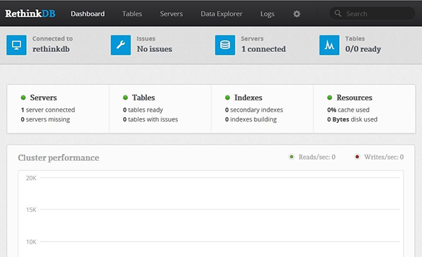

Configuring RethinkDB on Arch Linux, NoSQL
Install and Configure RethinkDB - Arch Linux
Difficulty: 2
Time: 15 minutes
RethinkDB belongs to the NoSQL database family. It is designed specifically to push data to applications in real-time. This provides a base for creating real-time, scalable, database-oriented web applications. It has a very simple API to interact with the databases. This article explains installing and configuring RethinkDB on Arch Linux.
Installing RethinkBD includes two main components: the database itself, and the client driver, which interacts with the database from your programming language.
You need sudo privileges to complete these steps.
Install RethinkDB software
- Update the repository.
sudo pacman -Sy
- Install RethinkDB.
sudo pacman -S rethinkdb
Install the Python client driver
In this article we will be installing python client driver. You can use pip (Python Package Manager) to install the client driver for RethinkDB. It is a best practice to run Python applications in an isolated environment.
- Install the virtual environment.
sudo pacman -S python2-virtualenv
sudo pacman -S python2-pip
mkdir rethink
cd rethink
- Create the virtual environment structure.
virtualenv2 venv
- Activate the environment.
source venv/bin/activate
- Install the RethinkDB driver using
pip.
pip install rethinkdb
This will install the Python client drivers for RethinkDB.
Start RethinkDB
- Start RethinkDB to access it through web interface.
rethinkdb --bind all
- Access your server at http://public_IP_of_your_server_or_domain:8080

Using this Web interface, you can manage creating database, tables, and can configure RethinkDB cluster to manage table replication.
-
To come back on command prompt and shut down the rethinkDB, press Ctrl+C:
-
To come out the python virtual environment type:
deactivate
Start the Python virtual environment
In most cases, you will be managing databases using the programming language. The following commands will help you perform these tasks:
-
Create new configuration file.
sudo cp /etc/rethinkdb/instances.d/default.conf /etc/rethinkdb/instances.d/cluster_instance.conf
sudo vim /etc/rethinkdb/instances.d/cluster_instance.conf
-
Search for
bind=127.0.0.1. This line is commented. Add following line beneath it.
bind=all
-
Save and close the file by pressing the Esc key, and then typing :wq, followd by the Enter key.
-
Enable and start new configuration.
sudo systemctl enable rethinkdb@cluster_instance
sudo systemctl start rethinkdb@cluster_instance
- Activate the virtual environment for Python.
cd ~/rethink
source venv/bin/activate
Interact with RethinkDB from Python
- Start Python interpreter. Your prompt will change to ">>>" indicating you are now issuing commands within the python interpreter.
sudo python
- Import the client driver into the environment.
import rethinkdb as r
- Connect with the local database.
r.connect("localhost",28015).repl()
- Create the database.
r.db_create("article").run()
- Create table posts.
r.db("article").table_create("posts").run()
- Insert values to table posts.
r.db("article").table("posts").insert({"hello":"world"}).run()
- Print the contents in a table.
c = r.db("article").table("posts").run()
for x in c:
print x
-
Exit the python shell.
exit()
-
Come out of python virtual environment.
deactivate
If you navigate back to your Rethink server at http://public_IP_of_your_server_or_domain:8080 and select Tables from the menu at the top,
you will see your database, article and the posts table.
Next steps
In this article, you reviewed the steps involved in installing and configuring RethinkDB in Arch Linux. For further exploration, visit Set up a sharded RethinkDB Cluster - Arch Linux.